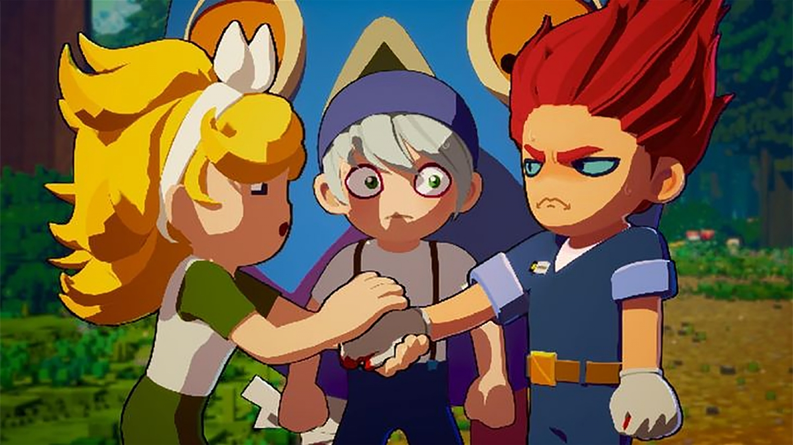
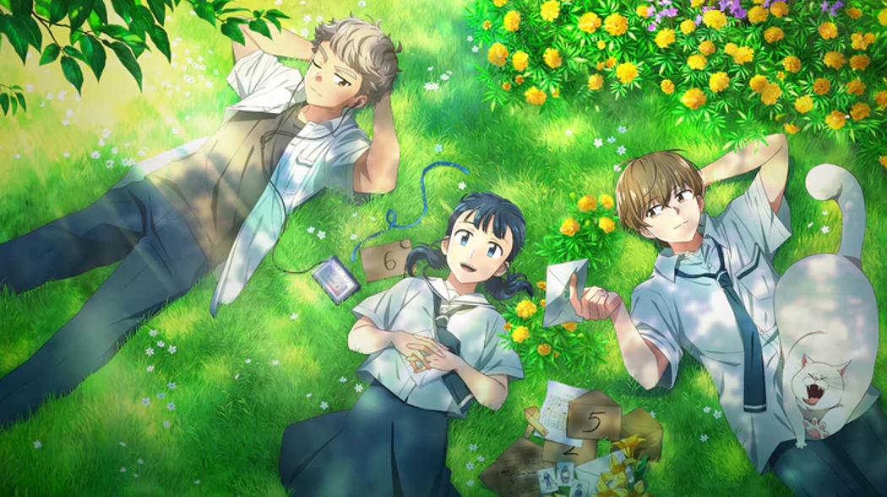

Webtoon Hàn Quốc không chỉ là nguồn cảm hứng cho những bộ phim truyền hình ăn khách. Một hướng đi mới đang được chú ý là đưa truyện tranh số lên màn ảnh rộng bằng chính năng lực sản xuất của các studio Hàn Quốc. Guardians of the Video Game, dự án chuyển thể từ webtoon của Gasfard, dự kiến ra rạp tại Hàn Quốc ngày 14/10/2026, là một trong những tác phẩm tiêu biểu cho xu hướng này.

Khi webtoon không chỉ dừng lại trên màn hình điện thoại
Nếu K-drama thường khiến khán giả nhớ đến những chuyện tình lãng mạn hay các màn đấu trí căng thẳng, thì thế giới webtoon Hàn Quốc còn rộng hơn thế rất nhiều. Những câu chuyện được đăng tải theo từng tập trên nền tảng số đang trở thành nguồn nguyên liệu cho phim điện ảnh, phim truyền hình và cả hoạt hình chiếu rạp.
Theo The Korea Times ngày 29/9/2026, các studio hoạt hình Hàn Quốc đang mở rộng hoạt động chuyển thể webtoon nội địa thành phim dài, đồng thời tăng cường năng lực sản xuất trong nước thay vì phụ thuộc hoàn toàn vào các đối tác quốc tế.
Một dự án đáng chú ý là Guardians of the Video Game, chuyển thể từ webtoon cùng tên của Gasfard trên Naver Webtoon. Bộ phim do studio Locus tại Seoul sản xuất và được lên lịch phát hành tại rạp Hàn Quốc vào ngày 14/10/2026.
Điểm đáng quan tâm không chỉ nằm ở bản thân tác phẩm, mà còn ở cách ngành hoạt hình Hàn Quốc đang tìm kiếm cơ hội để biến những câu chuyện đã có cộng đồng độc giả thành sản phẩm điện ảnh hoàn chỉnh.
Locus và tham vọng đưa truyện tranh số lên màn ảnh rộng
Locus là studio đứng sau Guardians of the Video Game. Trước dự án này, hãng từng thực hiện Exorcism Chronicles: The Beginning, tác phẩm hoạt hình chuyển thể từ tiểu thuyết huyền bí Hàn Quốc nổi tiếng trong thập niên 1990.
Theo thông tin được công bố, Locus còn có những dự án chuyển thể webtoon khác trong danh mục phát triển, gồm Barkhan và Denma. Điều này cho thấy việc khai thác truyện tranh số không phải một dự án đơn lẻ, mà đang trở thành một phần trong kế hoạch phát triển nội dung của studio.
So với phim truyền hình, phim hoạt hình chiếu rạp có những yêu cầu riêng về nhịp kể chuyện, hình ảnh, âm thanh và khả năng duy trì sức hút trong suốt thời lượng phim. Bởi vậy, chuyển thể không đơn thuần là đưa các khung tranh lên màn ảnh, mà còn cần tái cấu trúc câu chuyện để phù hợp với ngôn ngữ điện ảnh.
“Your Letter” - Một câu chuyện nhẹ nhàng có thể đi xa đến đâu?
Một ví dụ khác cho tiềm năng của webtoon Hàn Quốc là Your Letter, phim hoạt hình dựa trên tác phẩm của Cho Hyeon-ah và được sản xuất bởi Studio N.

Theo The Korea Times, bộ phim đã được bán quyền phát hành trước tại 166 quốc gia. Tác phẩm được chú ý nhờ hình ảnh vẽ tay và cách kể chuyện giàu cảm xúc, cho thấy các câu chuyện đời thường, nhẹ nhàng cũng có thể tìm được khán giả bên ngoài Hàn Quốc.
Điều này mở ra một góc nhìn thú vị: để có thể tiếp cận thị trường quốc tế, một tác phẩm không nhất thiết phải dựa vào những trận chiến hoành tráng hay thế giới giả tưởng phức tạp. Một câu chuyện gần gũi, được kể bằng hình ảnh và cảm xúc phù hợp, cũng có thể tạo kết nối với người xem ở nhiều nền văn hóa.
Cơ hội lớn, nhưng không phải con đường dễ dàng
Dù webtoon sở hữu lợi thế là đã có độc giả và lượng tương tác trên nền tảng số, phim hoạt hình Hàn Quốc vẫn đối diện nhiều thách thức. The Korea Times cho biết phim hoạt hình nội địa vẫn gặp khó khăn tại phòng vé trong nước khi so sánh với các tác phẩm nhập khẩu nổi tiếng của Nhật Bản.
Vì thế, phát triển năng lực sản xuất trong nước là một bước quan trọng, nhưng chưa đủ để bảo đảm thành công thương mại. Các studio còn phải tìm được mô hình phát hành, quảng bá và khai thác bản quyền phù hợp; đồng thời tạo ra những tác phẩm có sức hấp dẫn vượt khỏi cộng đồng độc giả ban đầu.
Với các nhà sáng tạo webtoon, việc tác phẩm được chuyển thể cũng mở ra thêm cơ hội để nhân vật và thế giới do mình xây dựng tiếp cận khán giả qua một hình thức khác. Với độc giả, đó là dịp trải nghiệm lại câu chuyện yêu thích bằng chuyển động, âm thanh và cách dàn dựng mới.
Từ những tập truyện dọc trên điện thoại đến màn ảnh rộng tại rạp chiếu, webtoon Hàn Quốc đang mở rộng hành trình của mình trong ngành công nghiệp giải trí. Guardians of the Video Game là một trong những dự án đáng theo dõi trong làn sóng này, đồng thời phản ánh nỗ lực của các studio Hàn Quốc trong việc phát triển năng lực sản xuất hoạt hình nội địa.
Với Góc Comic, câu chuyện không chỉ là bộ truyện nào sắp được chuyển thể, mà còn là cách một ý tưởng trên trang truyện có thể biến đổi khi bước sang một định dạng mới.